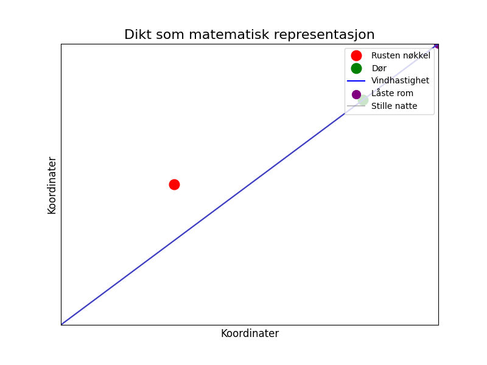

En rusten nøkkel i gresset lå, og ventet på døren den engang så. Vinden hvisket om låste rom, mens sommernatten ble stille og tom.

import matplotlib.pyplot as plt
import numpy as np
# Dikt
dikt = """En rusten nøkkel i gresset lå,
og ventet på døren den engang så.
Vinden hvisket om låste rom,
mens sommernatten ble stille og tom."""
# Nøkkelens posisjon (x, y) - representert som et punkt i et koordinatsystem
nøkkel_x = 0.3
nøkkel_y = 0.5
# Dørens posisjon (x, y)
doer_x = 0.8
doer_y = 0.8
# Vinden (hastighet) - representert som en graf
vind_hastighet = np.linspace(0, 1, 100)
# Låste rom (antall) - representert som en linje
# Antall låste rom er antall ord som beskriver rom
rom_antall = np.arange(1, 5)
# Sommernatten (stillehet) - representert som en flate
# Stillehet er representert som en grad av stillhet, fra 0 til 1
stillhet = np.linspace(0, 1, 100)
# Figur og akser
fig, ax = plt.subplots(figsize=(8, 6))
# Nøkkel
ax.plot(nøkkel_x, nøkkel_y, 'ro', markersize=12, label='Rusten nøkkel')
# Dør
ax.plot(doer_x, doer_y, 'go', markersize=12, label='Dør')
# Vinden
ax.plot(vind_hastighet, vind_hastighet, 'b-', label='Vindhastighet')
# Låste rom
ax.scatter(rom_antall, rom_antall, color='purple', s=100, label='Låste rom')
# Sommernatten
ax.plot(stillhet, stillhet, color='gray', alpha=0.5, label='Stille natte')
# Tittel og etiketter
ax.set_title('Dikt som matematisk representasjon', fontsize=16)
ax.set_xlabel('Koordinater', fontsize=12)
ax.set_ylabel('Koordinater', fontsize=12)
# Legende
ax.legend(loc='upper right', fontsize=10)
# Juster plotområdet
ax.set_xlim(0, 1)
ax.set_ylim(0, 1)
# Fjern akseetiketter og tickmarks
ax.set_xticks([])
ax.set_yticks([])
# Lagre figuren
plt.savefig(output_path)execution_ok=True fallback_used=False image_ok=True